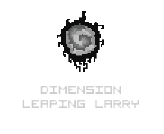
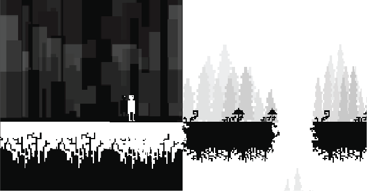
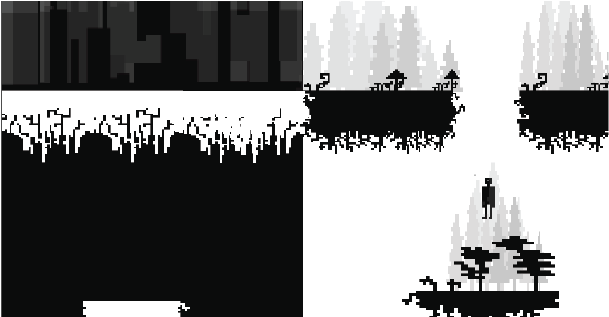
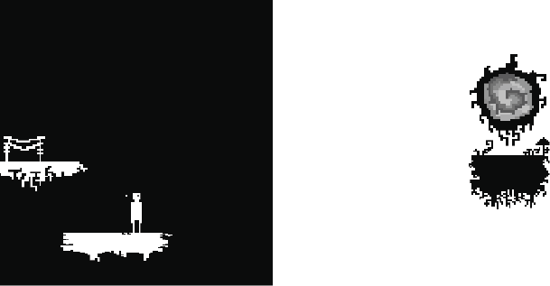

This is a collaborative project between Keiji Kimura and Andrew Benson. Players assume the role of "Dimension Leaping Larry", an unremarkable character, except for his ability to "leap" into another dimension, mirroring his former location across the screen. In production as of 2015.



y